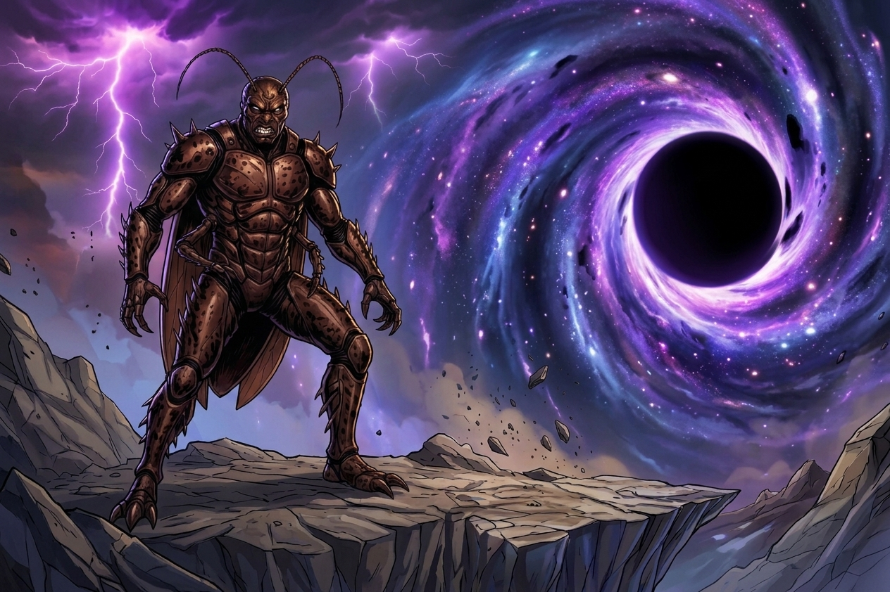

Rei Barata
Rei Barata pode não ser o verdadeiro vilão de Nova Aurora

Durante horas, o Rei Barata foi considerado o responsável pelo ataque à cidade. Seu exército robótico destruiu prédios, invadiu sistemas de segurança e enfrentou praticamente todos os heróis disponíveis.
Mas novas informações começam a mudar essa história. Após a batalha, os investigadores descobriram que várias máquinas utilizadas pelo vilão possuíam uma tecnologia desconhecida. O detalhe mais estranho? A tecnologia não parece ter sido criada pelo Rei Barata.
Um exército controlled?
Os registros encontrados em uma das máquinas mostram que os robôs receberam comandos de uma
fonte externa. O Rei Barata aparentemente tinha controle sobre o exército, mas não seria
necessariamente responsável pela sua programação original. Isso levantou uma nova teoria entre
os especialistas de Nova Aurora: talvez o vilão tenha sido manipulado.
O símbolo desconhecido
Entre os arquivos recuperados existe uma imagem extremamente enigmática: um círculo negro
cercado por pequenas linhas roxas. É exatamente o mesmo símbolo observado no portal do Vazio.
Para alguns investigadores, isso prova que existe uma conexão; para outros, pode ser apenas uma
coincidência.
Mas existe outro detalhe. Antes de desaparecer, o Rei Barata teria dito uma única frase:
Desde então, o vilão desapareceu. Seu paradeiro é desconhecido. E, pela primeira vez, os heróis começam a considerar uma possibilidade assustadora: talvez o Rei Barata esteja fugindo de alguém.